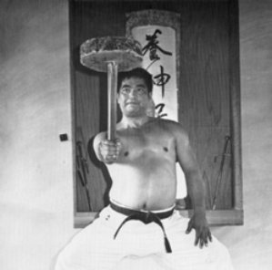

Hojo Undo
Supplementary training

Hojo undo, also called kigu undo, is training with equipment. Since ancient times, Okinawan karateka have used simple domestic tools to build strength, develop impact power, and deepen their practice. Training with these tools is the key to developing the power of karate technique.
Chojun Miyagi stressed that practicing kata without proper conditioning of the body was little more than gymnastics, and could not be considered true bujutsu. It is by forging the techniques of kata that the value of hojo undo becomes clear.
Supplementary exercises, hojo undo, are practiced with the aim of perfecting the kata. The purpose of these exercises is not only to develop strength and power in the body as a whole, but to develop each part of the body individually in order to develop complete body power.Chojun Miyagi
Tools we train with
- Chi ishi
- Stone weights on a wooden handle. Swung, lifted, and rotated to build the grip, wrists, forearms, and shoulders, and to connect the arm to the body.
- Nigiri game
- Gripping jars held by the rim and carried through stances. They strengthen the fingers and grip and reinforce a rooted, stable stance.
- Ishi sashi
- Stone hand weights used for punching, blocking, and lifting drills that build strength through the movements of kata. We also use kettlebells in the same role.
- Makiwara
- A flexible striking post. Regular practice develops focus, alignment, and a properly conditioned striking surface.